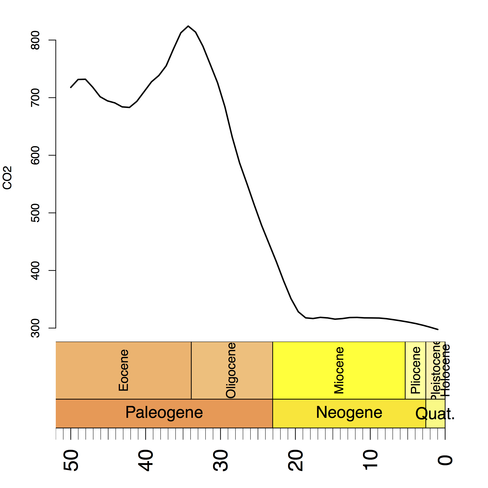
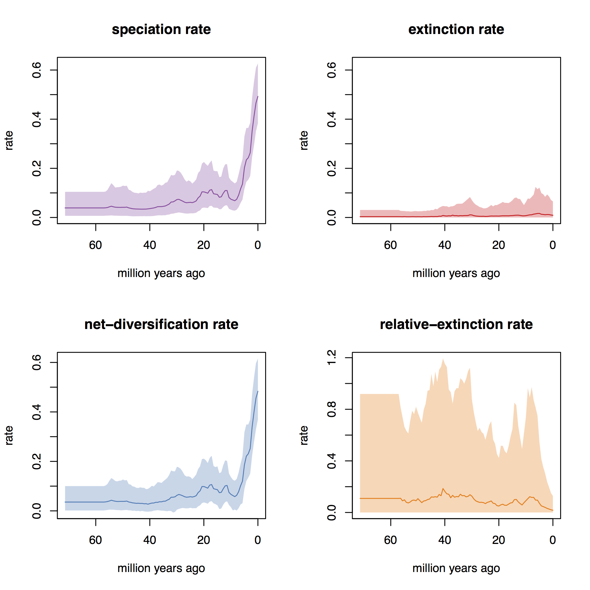
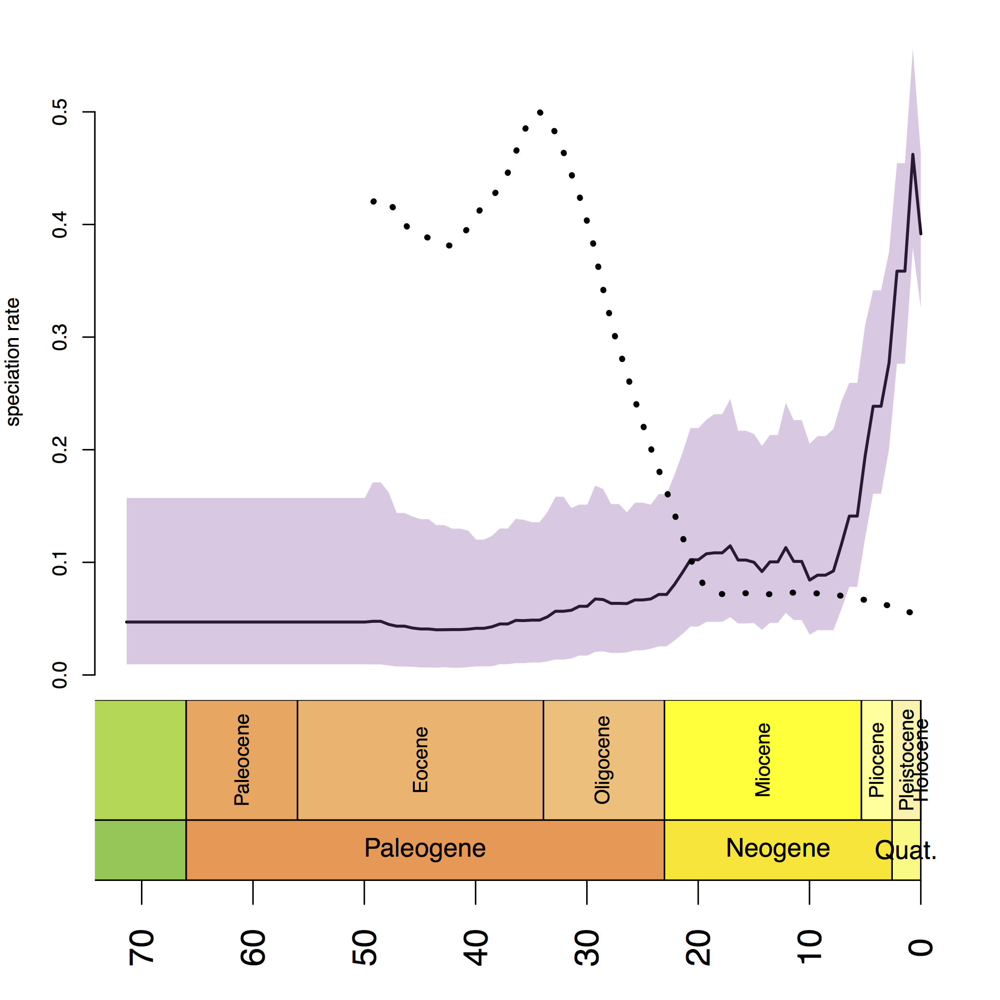
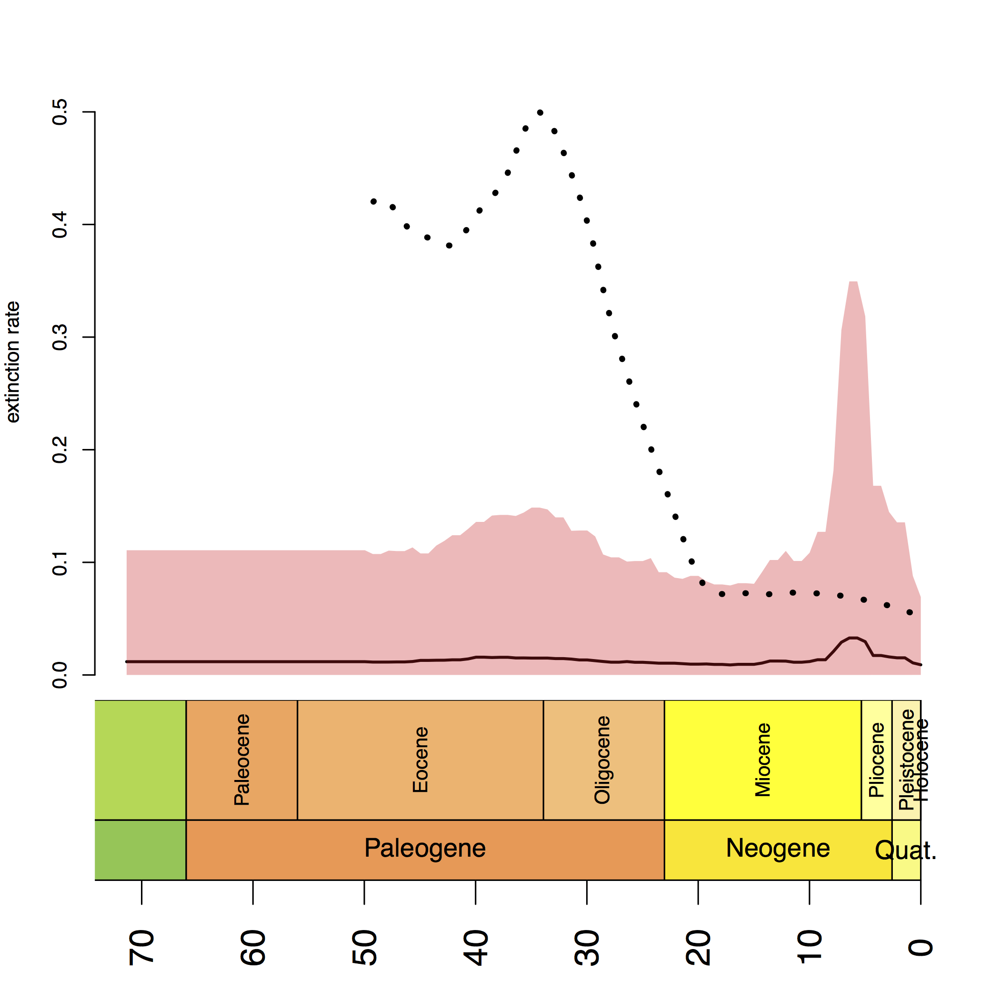
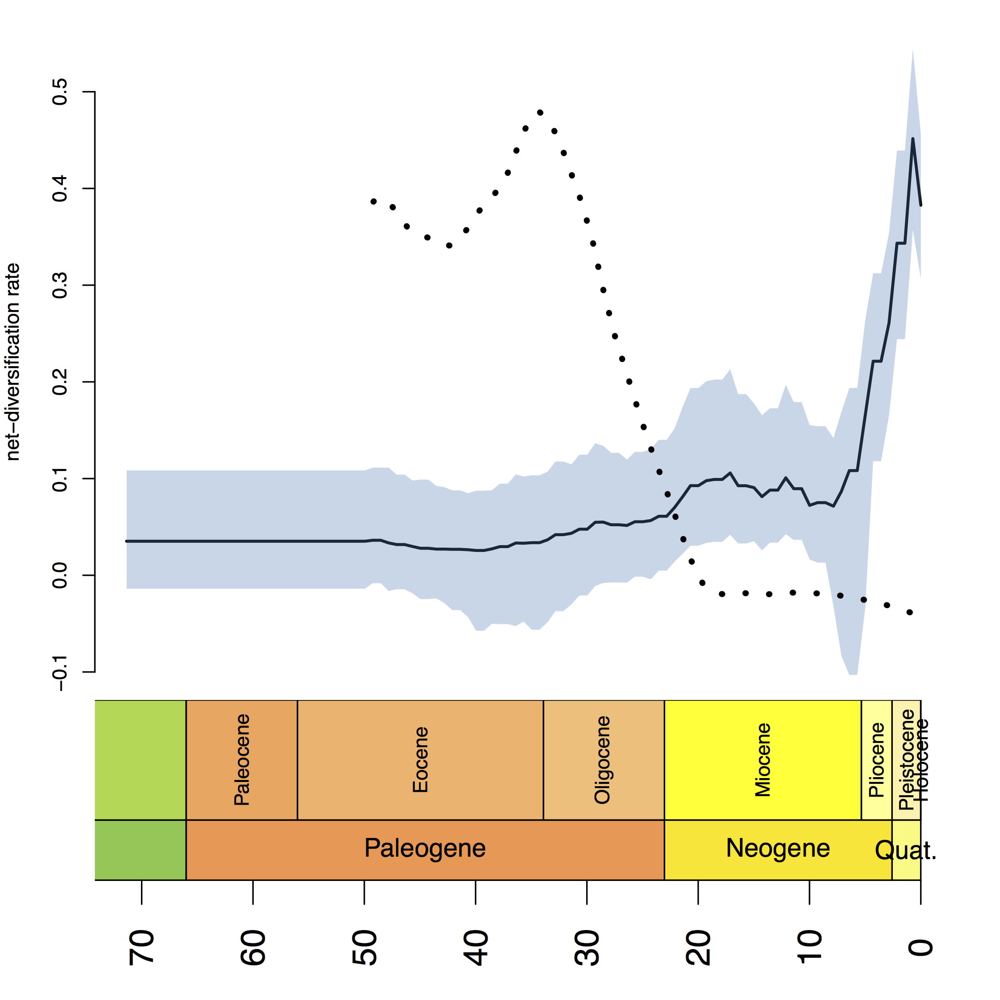
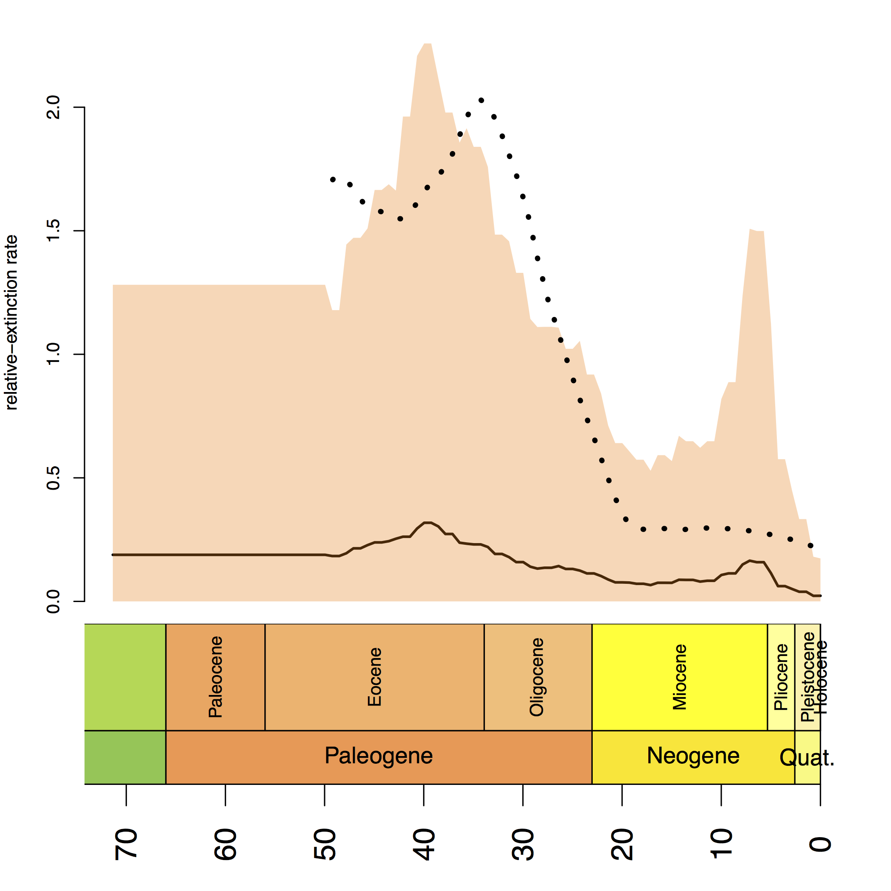

This tutorial describes how to specify a branching-process model with
diversification rate correlated with an environmental variable in RevBayes.
Diversification rates are assumed to be equal among all lineages but vary through time
correlated with an environmental predictor variable.
Thus, this model can be used to test for correlations between diversification rates
and environmental variables, such as $\text{CO}_2$ and temperature.
However, these tests are only to establish a correlation, not a causality.
As usual, we provide the probabilistic graphical model at the beginning of this tutorial. Hopefully this will help you to get a better idea of all the variables in the model and their dependencies. Our goal in this tutorial is to estimate the correlation coefficient between speciation and extinction rates to historical $\text{CO}_2$ measurements using Markov chain Monte Carlo (MCMC).
The fundamental idea of this model is the question if diversification rates are correlated with an environmental variable. Examples of environmental variables are $\text{CO}_2$ and temperature.

Have a look at which shows the historical value $\text{CO}_2$ in the last 50 million years. We can clearly see that the $\text{CO}_2$ dropped drastically around 30 million years ago.

In our previous Episodic Diversification Rate Estimation we estimated diversification as shown in . We clearly see that diversification rates were not constant through time. Now we wonder if perhaps the diversification rates are correlated with $\text{CO}_2$.
We want to build on our episodic birth-death model so that our environmental correlation model collapses to the episodic birth-death model if there is no correlation. Recall that we used a Brownian motion model on the log-transformed rates. Hence, we assumed that the rates in the next time interval (epoch) have the current value as their expectation:
For the environmental dependent birth-death model, we have additional observation from the environmental variable. Thus, we know how much the environmental variable changed between time intervals (epochs). We can compute this change by taking the ratio between two consecutive measurements: $\frac{\text{CO}_2(t)}{\text{CO}_2(t-\Delta t)}$. Hence, if the $\text{CO}_2$ double from one epoch to the next we would compute a change of 2. This has the clear advantage that our computation is less sensitive to the unit and magnitude of the environmental variable.
Now let us assume that our diversification rates shift synchronously with the environmental variable if they are actually correlated. Then we can express our expectation of the log-transformed diversification rate in the next time interval (epoch) as being equal the log-transform diversification rate in the current time interval plus the log-transformed change in the environmental variable:
Here we denote the correlation coefficient by $\beta$. If $\beta > 0$ then there is a positive correlation between the speciation rate and $\text{CO}_2$, that is, if the $\text{CO}_2$ increases then the speciation increases also. If $\beta < 0$ then there is a negative correlation between the speciation rate and $\text{CO}_2$, that is, if the $\text{CO}_2$ increases then the speciation decreases. Finally, if $\beta = 0$ then there is no correlation and our model collapses to the episodic birth-death model.
In summary, we use a regression-like prior model for the speciation and extinction rate where the environmental variable (here $\text{CO}_2$) is the predictor variable. Specifically, we use a Brownian motion model for the log-transformed speciation and extinction rates where the expectation depends on the shift in the environmental variable. Thus, our model can be considered as a Brownian motion model with drift where the drift parameter is the environmental variable.
We will now walk you through setting up this analysis in RevBayes.
Begin by reading in the ``observed’’ tree.
T <- readTrees("data/primates_springer.tre")[1]
From this tree, we get some helpful variables, such as the taxon information which we need to instantiate the birth-death process.
taxa <- T.taxa()
Additionally, we initialize an iterator variable for our vector of moves and monitors.
mvi = `
mni = `
We take the $\text{CO}_2$ measurement from XXX and store the values on a vector; one measurement (value) per interval.
var <- v(297.6, 301.36, 304.84, 307.86, 310.36, 312.53, 314.48, 316.31, 317.42, 317.63, 317.74, 318.51, 318.29, 316.5, 315.49, 317.64, 318.61, 316.6, 317.77, 328.27, 351.12, 381.87, 415.47, 446.86, 478.31, 513.77, 550.74, 586.68, 631.48, 684.13, 725.83, 757.81, 789.39, 813.79, 824.25, 812.6, 784.79, 755.25, 738.41, 727.53, 710.48, 693.55, 683.04, 683.99, 690.93, 694.44, 701.62, 718.05, 731.95, 731.56, 717.76)
Then we specify the maximum age of the measurements. This corresponds to the time of the last interval.
MAX_VAR_AGE = 50
We will later use this maximum age to compute the times for each interval by assuming that each interval is equal in time.
Finally, we create a helper variable that specifies the number of intervals.
NUM_INTERVALS = var.size()-1
This variable will help us to create the episodic diversification rate using a for-loop.
In RevBayes you actually have the possibility to specify unequal time intervals or even different intervals for the speciation and extinction rate.
This is achieved by providing a vector of times when each interval ends.
However, here we assume for simplicity that each interval has the same length because this is how we obtained our environmental data.
interval_times <- MAX_VAR_AGE * (1:NUM_INTERVALS) / NUM_INTERVALS
This vector of times will be used for both the speciation and extinction rates. Also, remember that the times of the intervals represent ages going backwards in time.
We follow here exactly the prior specification as in the \href{https://github.com/revbayes/revbayes_tutorial/raw/master/tutorial_TeX/RB_DiversificationRate_Episodic_Tutorial/RB_DiversificationRate_Episodic_Tutorial.pdf}{Diversification Rates Through Time tutorial} because we want our model to collapse to the episodic birth-death if there is no correlation.
We start by specifying prior distributions on the rates.
Each interval-specific speciation and extinction rate will be drawn from a normal distribution.
Thus, we need a parameter for the standard deviation of those normal distributions.
We use an exponential hyperprior with rate SD = 0.587405 / NUM_INTERVALS to estimate the standard deviation, but assume that all speciation rates and all extinction rates share the same standard deviation.
The motivation for an exponential hyperprior is that it has the highest probability density at 0 which would make the variance of rates between consecutive time intervals 0 and thus represent a constant rate process.
The data will tell us if there should be much variation in rates through time.
(You may want to experiment with this hyperprior if you are interested.)
SD = 0.587405 / NUM_INTERVALS
speciation_sd ~ dnExponential( 1.0 / SD )
extinction_sd ~ dnExponential( 1.0 / SD)
We apply a simple scaling move on each prior parameter.
moves[mvi++] = mvScale(speciation_sd,weight=5.0)
moves[mvi++] = mvScale(extinction_sd,weight=5.0)
Then we specify normal prior distributions on the correlation coefficient $\beta$ for the speciation and extinction rate. Again, out total lack of prior knowledge, we will assume that the standard deviation of $\beta$ is $1.0$ and you may want to modify this value. Nevertheless, this normal prior distribution is motivated by being centered at 0.0 (no correlation) and gives equal weight to positive and negative correlations.
beta_speciation ~ dnNormal(0,1.0)
beta_extinction ~ dnNormal(0,1.0)
We apply simple sliding-window moves for the two correlation coefficients because they are defined on the whole real line.
moves[mvi++] = mvSlide(beta_speciation,delta=1.0,weight=10.0)
moves[mvi++] = mvSlide(beta_extinction,delta=1.0,weight=10.0)
Additionally, we might be interested in the posterior probability that there is a positive correlation, $\mathbb{P}(\beta>0)$, or a negative correlation, $\mathbb{P}(\beta<0)$, respectively. We achieve this using a deterministic variable that is 1 if $\beta<0$
speciation_corr_neg_prob := ifelse(beta_speciation < 0.0, 1, 0)
extinction_corr_neg_prob := ifelse(beta_extinction < 0.0, 1, 0)
speciation_corr_pos_prob := ifelse(beta_speciation > 0.0, 1, 0)
extinction_corr_pos_prob := ifelse(beta_extinction > 0.0, 1, 0)
Note that in this model the probability of $\beta$ being 0.0 ($\mathbb{P}(\beta=0)=0$) because we are working with a prior and posterior \emph{density} on $\beta$ and thus any specific value, \EG 0.0, has a probability of 0.0. We will circumvent this issue in the next chapter when we use reversible-jump MCMC to set $\beta$ specifically to 0.0. Here you can also check that the posterior probability of \cl{speciation_corr_pos_prob} equals 1-\cl{speciation_corr_neg_prob}.
As we mentioned before, we will apply normal distributions as priors for each log-transformed rate. We begin with the rate at the present which is our initial rate parameter. The rates at the present will be specified slightly differently because they are not correlated to any previous rates. This is because we are actually modeling rate-changes backwards in time and there is no previous rate for the rate at the present.
We use a uniform distribution between -10 and 10 because of our lack of prior knowledge on the diversification rate. This actually means that we allow speciation and extinction rates between $e^{-10}$ and $e^10$ we should clearly cover the true values. (Note that for diversification rate estimates $e^{-10}$ is virtually 0 since the rate is so slow).
log_speciation[1] ~ dnUniform(-10.0,10.0)
log_speciation[1] ~ dnUniform(-10.0,10.0)
Notice that we store the diversification rate variables in vectors. Storing the rate parameters in vectors will be useful and important later when we pass the rates into the birth-death process.
We apply simple sliding window moves for the rates. Normally we would use scaling moves but in this case we work on the log-transformed parameters and thus sliding moves perform better. (If you are keen you can test the differences.)
moves[mvi++] = mvSlide(log_speciation[1], weight=2)
moves[mvi++] = mvSlide(log_extinction[1], weight=2)
Now we transform the diversification rate parameters into actual rates.
speciation[1] := exp( log_speciation[1] )
extinction[1] := exp( log_extinction[1] )
Next, we specify the speciation and extinction rates for each time interval (i.e., epoch).
This can be done efficiently using a for-loop.
We will use a specific index variable so that we can easier refer to the rate at the previous interval.
Remember that we want to model the rates as a Brownian motion, which we achieve by specify a normal distribution as the prior distribution on the rates centered around the previous rate plus the change in the environmental variable (\IE the mean is equal to the previous rate plus the log-transformed ratio of the environmental variable divided by the previous value).
for (i in 1:NUM_INTERVALS) {
index = i+1
expected_speciation[index] := log_speciation[i] + beta_speciation * ln( var[index] / var[i] )
expected_extinction[index] := log_extinction[i] + beta_extinction * ln( var[index] / var[i] )
log_speciation[index] ~ dnNormal( mean=expected_speciation[index], sd=speciation_sd )
log_extinction[index] ~ dnNormal( mean=expected_extinction[index], sd=extinction_sd )
moves[mvi++] = mvSlide(log_speciation[index], weight=2)
moves[mvi++] = mvSlide(log_extinction[index], weight=2)
speciation[index] := exp( log_speciation[index] )
extinction[index] := exp( log_extinction[index] )
}
Finally, we apply moves that slide all values in the rate vectors, \IE all speciation or extinction rates. We will use an \cl{mvVectorSlide} move.
moves[mvi++] = mvVectorSlide(log_speciation, weight=10)
moves[mvi++] = mvVectorSlide(log_extinction, weight=10)
Additionally, we apply a \cl{mvShrinkExpand} move which changes the spread of several variables around their mean.
moves[mvi++] = mvShrinkExpand( log_speciation, sd=speciation_sd, weight=10 )
moves[mvi++] = mvShrinkExpand( log_extinction, sd=extinction_sd, weight=10 )
Both moves considerably improve the efficiency of our MCMC analysis.
We know that we have sampled 367 out of 377 living primate species. To account for this we can set the sampling parameter as a constant node with a value of 367/377. For simplicity, and since almost all species have been sampled, we assume \emph{uniform} taxon sampling \citep{Hoehna2011,Hoehna2014a},
rho <- T.ntips()/377
The birth-death process requires a parameter for the root age. In this exercise we use a fix tree and thus we know the age of the tree. Hence, we can get the value for the root from the Springer et al. (2012) tree.
root_time <- T.rootAge()
Now we have all of the parameters we need to specify the full episodic birth-death model. We initialize the stochastic node representing the time tree.
timetree ~ dnEpisodicBirthDeath(rootAge=T.rootAge(), lambdaRates=speciation, lambdaTimes=interval_times, muRates=extinction, muTimes=interval_times, rho=rho, samplingStrategy="uniform", condition="survival", taxa=taxa)
You may notice that we explicitly specify that we want to condition on survival. It is possible to change this condition to the time of the process or *the number of sampled taxa8 too.
Then we attach data to the timetree variable.
timetree.clamp(T)
Finally, we create a workspace object of our whole model using the model() function.
mymodel = model(speciation)
The model() function traversed all of the connections and found all of the nodes we specified.
For our MCMC analysis, we need to set up a vector of monitors to record the states of our Markov chain.
First, we will initialize the model monitor using the mnModel function. This creates a new monitor variable that will output the states for all model parameters when passed into a MCMC function.
monitors[mni++] = mnModel(filename="output/primates_EBD_Corr.log",printgen=10, separator = TAB)
Additionally, we create four separate file monitors, one for each vector of speciation and extinction rates and for each speciation and extinction rate epoch (\IE the times when the interval ends). We want to have the speciation and extinction rates stored separately so that we can plot them nicely afterwards.
monitors[mni++] = mnFile(filename="output/primates_EBD_Corr_speciation_rates.log",printgen=10, separator = TAB, speciation)
monitors[mni++] = mnFile(filename="output/primates_EBD_Corr_speciation_times.log",printgen=10, separator = TAB, interval_times)
monitors[mni++] = mnFile(filename="output/primates_EBD_Corr_extinction_rates.log",printgen=10, separator = TAB, extinction)
monitors[mni++] = mnFile(filename="output/primates_EBD_Corr_extinction_times.log",printgen=10, separator = TAB, interval_times)
Finally, create a screen monitor that will report the states of specified variables to the screen with \cl{mnScreen}:
monitors[mni++] = mnScreen(printgen=1000, beta_speciation, beta_extinction)
With a fully specified model, a set of monitors, and a set of moves, we can now set up the MCMC algorithm that will sample parameter values in proportion to their posterior probability. The \cl{mcmc()} function will create our MCMC object:
mymcmc = mcmc(mymodel, monitors, moves, nruns=2, combine="mixed")
Now, run the MCMC:
mymcmc.run(generations=50000, tuningInterval=200)
When the analysis is complete, you will have the monitored files in your output directory. You can then visualize the rates through time using \R using our package \RevGadgets. If you don’t have the R-package \RevGadgets installed, or if you have trouble with the package, then please read the separate tutorial about the package.
Just start R in the main directory for this analysis and then type the following commands:
library(RevGadgets)
tree <- read.tree("data/primates_Springer.tre")
# the CO2 values as a reference in our plot
co2 <- c(297.6, 301.36, 304.84, 307.86, 310.36, 312.53, 314.48, 316.31, 317.42, 317.63, 317.74, 318.51, 318.29, 316.5, 315.49, 317.64, 318.61, 316.6, 317.77, 328.27, 351.12, 381.87, 415.47, 446.86, 478.31, 513.77, 550.74, 586.68, 631.48, 684.13, 725.83, 757.81, 789.39, 813.79, 824.25, 812.6, 784.79, 755.25, 738.41, 727.53, 710.48, 693.55, 683.04, 683.99, 690.93, 694.44, 701.62, 718.05, 731.95, 731.56, 717.76)
MAX_VAR_AGE = 50
NUM_INTERVALS = length(co2)
co2_age <- MAX_VAR_AGE * (1:NUM_INTERVALS) / NUM_INTERVALS
predictor.ages <- co2_age
predictor.var <- co2
rev_out <- rev.process.div.rates(speciation_times_file = "output/primates_EBD_Corr_speciation_times.log",
speciation_rates_file = "output/primates_EBD_Corr_speciation_rates.log",
extinction_times_file = "output/primates_EBD_Corr_extinction_times.log",
extinction_rates_file = "output/primates_EBD_Corr_extinction_rates.log",
tree,
burnin=0.25,numIntervals=100)
pdf("EBD_Corr.pdf")
par(mfrow=c(2,2))
rev.plot.div.rates(rev_out, predictor.ages=co2_age, predictor.var=co2, use.geoscale=TRUE)
dev.off()
⇨ The Rev file for performing this analysis: mcmc_EBD_Corr.Rev
   
shows the estimated diversification rates through time and the $\text{CO}_2$. If you compare these estimates with then you may notice that the diversification rate estimate are virtually identical. This is a good sign for the analysis because it shows that the information in the estimates comes from the data (the tree in this case) and not from the assumed model. Thus, we are not artificially forcing the diversification rates to follow our environmental variable but instead estimate if there is a correlation. Small deviation between the estimated rates under the different analyses are expected because there will be some interaction between the environmental variable and the diversification rate estimates. Additionally, the uncertainty in estimated diversification rates through time is large und minor changes are within this uncertainty.
In the previous exercise we wanted that our model collapses to the episodic birth-death process if there is no environmental correlation. We achieved this by setting up our prior model so that if $\beta=0$ the model collapses. However, we also used a normal prior distribution with mean 0.0 and standard deviation 1.0 for $\beta$. Thus, we implicitly specified that $\beta$ being exactly 0.0 has probability 0.0 because every specific value of a continuous distribution has a 0.0 probability despite having a positive probability density. For example, you might notice that you will never sample in your MCMC run the value 0.0 exactly although we might sample values that are close to 0.0.
Now we want to use reversible jump MCMC to test specifically if the hypothesis $\beta=0$ is rejected. Remember that reversible jump MCMC can estimate the posterior probability for different models. The first model will be that $\beta=0$ and the second model will be that $\beta \sim \text{norm}(0,1)$. Then we can simply compute Bayes factors by computing the posterior ratio divided by the prior ratio to assess the support for either model.
In RevBayes we have a very flexible way to specify a reversible-jump MCMC.
We can provide any constant value and distribution to the distribution dnReversibleJumpMixture.
This will mean that the value, beta_speciation and beta_extinction, will either take on the constant value or drawn from the base-distribution.
beta_speciation ~ dnReversibleJumpMixture(constantValue=0.0, baseDistribution=dnNormal(0,1.0), p=0.5)
beta_extinction ~ dnReversibleJumpMixture(constantValue=0.0, baseDistribution=dnNormal(0,1.0), p=0.5)
Additionally we also need a specific move that switches if the value is equal to the constant value or drawn from the base-distribution. This is where we use the reversible-jump move \cl{mvRJSwitch}.
moves[mvi++] = mvRJSwitch(beta_speciation, weight=5)
moves[mvi++] = mvRJSwitch(beta_extinction, weight=5)
Now we can also monitor for convenience what the probability of beta_speciation and beta_extinction being 0.0 is.
We will set this up by a deterministic variable that will be 1.0 if $\beta \neq 0$ and will be 0.0 if $\beta = 0.0$.
Thus the two variables speciation_corr_prob and extinction_corr_prob represent the probability that there is a correlation between the speciation rate or the extinction rate and $\text{CO}_2$.
speciation_corr_prob := ifelse(beta_speciation == 0.0, 0, 1)
extinction_corr_prob := ifelse(beta_extinction == 0.0, 0, 1)
These are the only necessary changes to the above analysis to run a reversible-jump MCMC.